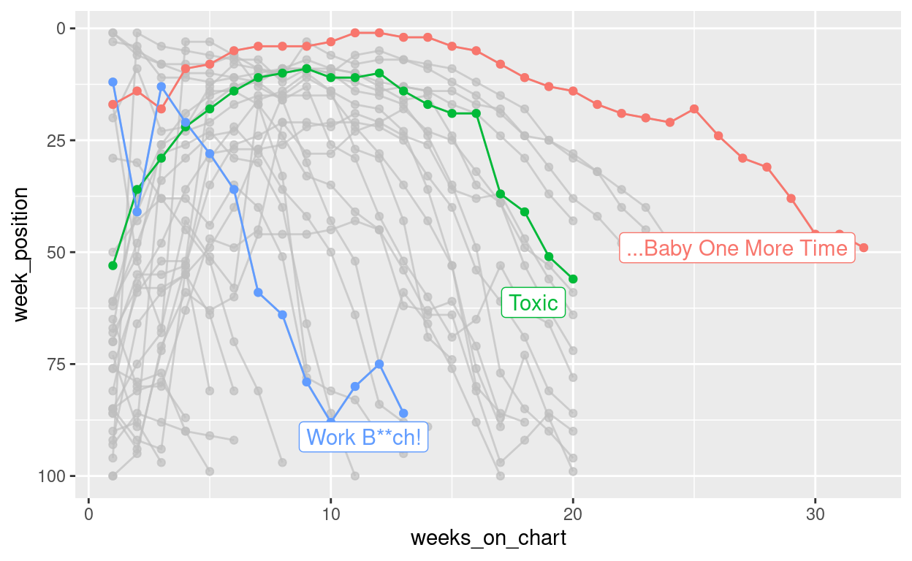
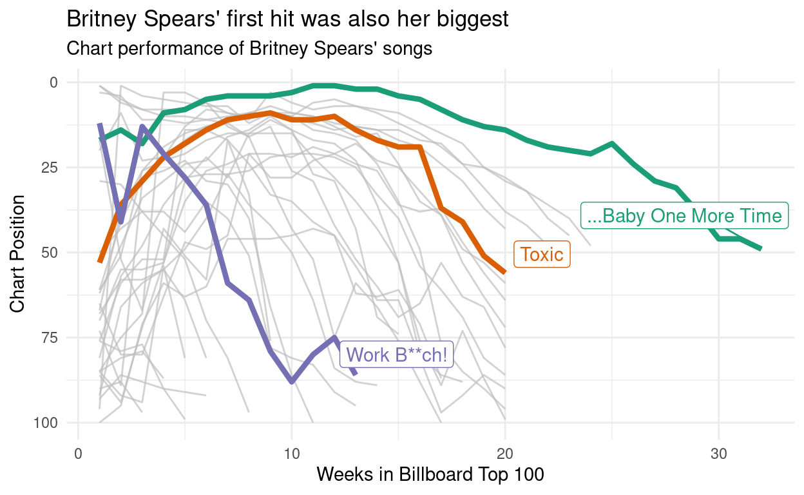

Ive never participated in Tidy Tuesday before, but because Ive now joined a slack that does, it is high time I did something about that poor track record. I wasnt sure what I wanted to do with this weeks Billboard data, other than I wanted it to have something to do with Britney Spears (because shes awesome). After going back and forward for a while, I decided what Id do is put together a couple of plots showing the chart performance of all her songs and more importantly write it up as a blog post in which I try to over-explain all my choices. There are a lot of people in our slack who havent used R very much, and I want to unpack some of the bits and pieces that are involved. This post is pitched at beginners who are hoping for a little bit of extra scaffolding to explain some of the processes
Finding the data on GitHub
Every week the Tidy Tuesday data are posted online, and the first step in participating is generally to import the data. After a little bit of hunting online, you might discover that the link to the billboard data looks like this:
Lets start by unpacking this link. There is a lot of assumed knowledge buried here, and while it is entirely possible for you to get started without understanding it all, for most of us in the slack group the goal is to learn new data science skills. At some point you are probably going to want to learn the version control magic. This post is not the place to learn this sorcery, but I am going to start foreshadowing some important concepts because they will be useful later.
GitHub repositories
The place to start in understanding this link is the peculiar bit at the beginning: what is this github nonsense? The long answer is very long, but the short answer is that https://github.com is a website that programmers use to store their code. GitHub is one of several sites (e.g., https://gitlab.org, https://bitbucket.com) that built on top of a system called git. Git is a powerful tool that lets you collaborate with other people when writing code, allows you to keep track of the history of your code, and to backup your code online in case your laptop mysteriously catches on fire. It takes quite some time to get the hang of (Im still learning, quite frankly), but it is worth your effort. When you have time, I recommend starting a free GitHub account. You can sign up using an email address, and if you have a university email address you get the educational discount (basically you get the pro version for free). My username on GitHub is djnavarro, and you can find my profile page here:
The Tidy Tuesday project originated in the R for data science learning community (R for data science is a wonderful free resource written by Hadley Wickham and Garrett Grolemund), and there is a profile page for that community too:
https://github.com/rfordatascience
Okay, so thats part of the link explained. The next thing to understand is that when you create projects using git and post them to GitHub, they are organised in a repository (repo for short). Each repo has its own page. The Tidy Tuesday repo is here:
https://github.com/rfordatascience/tidytuesday
If you click on this link, youll find that theres a nice description of the whole project, links to data sets, and a whole lot of other things besides. Most of the work organising this is done by Thomas Mock.
Repositories have branches
Whenever someone creates a git repository, it will automatically have at least one branch (usually called master or main). The idea behind it is really sensible: suppose youre working on a project and you think ooooh, I have a cool idea I want to try but maybe it wont work. What you can do is create a new branch and try out all your new ideas in the new branch all without ever affecting the master branch. Its a safe way to explore: if your new idea works you can merge the changes into the master branch, but if it fails you can switch back to the master branch and pick up where you left off. No harm done. If you have lots of branches, you effectively have a tree, and its a suuuuuuper handy feature. Later on as you develop your data science skills youll learn how to do this yourself, but for now this is enough information. The key thing is that what youre looking at when you visit the Tidy Tuesday page on GitHub is actually the master branch on the tree:
https://github.com/rfordatascience/tidytuesday/tree/master
Repositories are usually organised
The Tidy Tuesday repository has a lot of different content, and its all nicely organised into folders (no different to the folders youd have on your own computer). One of the folders is called data, and inside the data folder there is a 2021 folder:
https://github.com/rfordatascience/tidytuesday/tree/master/data/2021
Inside that folder you find lots more folders, one for every week this year. If you scroll down to the current week and click on the link, it will take you here:
https://github.com/rfordatascience/tidytuesday/tree/master/data/2021/2021-09-14
Being the kind soul that he is, Thomas has included a readme file (thats the nice human readable thing that gets displayed) underneath. Whenever youre doing a Tidy Tuesday analysis, its super helpful to look at the readme file, because it will provide you a lot of the context you need to understand the data. Whenever doing your own projects, Id strongly recommend creating readme files yourself: theyre really helpful to anyone using your work, even if thats just you several months later after youve forgotten what you were doing.
In any case, one of the things youll see on that page is a link to the billboard.csv data. If you click on that link it will take you here:
https://github.com/rfordatascience/tidytuesday/blob/master/data/2021/2021-09-14/billboard.csv
Notice that this doesnt take you to the data file itself: it goes to a webpage! Specifically, it takes you to the blob link that displays some information about the file (notice the blob that has sneakily inserted itself into the link above?). In this case, the page wont show you very much information at all because the csv file is 43.7MB in size and GitHub doesnt try to display files that big! However, what it does give you is a link that tells you where theyve hidden the raw file! If you click on it (which I dont recommend), it will take you to the raw file located at
This is the link that you might have discovered if youd been googling to find the Billboard data. Its a GitHub link, but GitHub uses the raw.githubusercontent.com site as the mechanism for making raw files accessible, which is why that part of the link has changed.
The anatomy of the data link
All of this tedious exposition should (I hope) help you make sense of what youre actually looking at when you see this link. In real life I would never bother to do this, but if you wanted to you could decompose the link into its parts. In the snippet below Ill create separate variables in R, one for each component of the link:
site <- "https://raw.githubusercontent.com"
user <- "rfordatascience"
repo <- "tidytuesday"
branch <- "master"
folder1 <- "data"
folder2 <- "2021"
folder3 <- "2021-09-14"
file <- "billboard.csv"
One thing you might be wondering, when you look at this snippet, is where that pretty arrow character comes from. Dont be fooled. Its actually two characters. What Ive actually typed is <-, but this blog uses a fancy pants font that contains a special ligature that joins the two characters together. The font is called Fira Code, and a lot of programmers use it on their blogs. Once you know the trick, its really nice because it does make the code a little easier to read, but it can be confusing if youre completely new to programming! Its one of those little things that people forget to tell you about :-)
Anyway, getting back on topic. The URL (uniform resource locator, a.k.a. link) for the Billboard data file is what you get when you paste() all these components together, separated by the / character:
data_url <- paste(
site,
user,
repo,
branch,
folder1,
folder2,
folder3,
file,
sep = "/"
)
data_url
[1] "https://raw.githubusercontent.com/rfordatascience/tidytuesday/master/data/2021/2021-09-14/billboard.csv"Exciting stuff.
Attaching packages
Im relatively certain that everyone in the slack has been exposed to the idea of an R package. A package is a collection of R functions and data sets that dont automatically come bundled with R, but are freely available online. The tidyverse, for example, is a collection of R packages that a lot people find helpful for data analysis, and you can install all of them onto your machine (or your RStudio Cloud project) by using this command:
install.packages("tidyverse")
This can take quite a while to complete because there are a lot of packages that make up the tidyverse! Once the process is completed, you will now be able to use the tidyverse tools. However, its important to recognise that just because youve installed the packages, it doesnt mean R will automatically use them. You have to be explicit. There are three tidyverse packages that Im going to use a lot in this post (dplyr, stringr, and ggplot2), so Ill use the library() function to attach the packages (i.e.tell R to make them available):
Importing the data
At this point we know where the data set is located, and we have some R tools that we can use to play around with it. The next step is reading the data into R. The readr package is part of the tidyverse, and it contains a useful function called read_csv() that can go online for you, retrive the billboard data, and load it into R. Thats cool and all but if you look at the library() commands above, I didnt actually attach them. I didnt want to do this because honestly Im only going to use the readr package once, and it feels a bit silly to attach the whole package. Instead, what Ill do is use the double colon notation :: to refer to the function more directly. When I write readr::read_csv() in R, what Im doing is telling R to use the read_csv() function inside the readr package. As long as I have readr on my computer, this will work even if I havent attached it using library(). The technical name for this is namespacing, and if you hang around enough R programmers long enough thats a word that will pop up from time to time. The way to think about it is that every package (e.g., readr) contains a collection of things, each of which has a name (e.g., read_csv is the name of the read_csv() function). So you can think of a space of these names and hence the boring term namespace.
Okay, lets use a namespaced command to import the data, and assign it to a variable (i.e., give the data a name). Ill call the data billboard:
billboard <- readr::read_csv(data_url)
The billboard data is a nice, rectangular data set. Every row refers to a specific song on a specific date, and tells you its position in the charts on that date. We can type print(billboard) to take a look at the first few rows and columns. In most situations (not all), you can print something out just by typing its name:
billboard
# A tibble: 327,895 10
url week_id week_position song performer song_id instance
<chr> <chr> <dbl> <chr> <chr> <chr> <dbl>
1 http:// 7/17/19 34 Don't Patty Du Don't Ju 1
2 http:// 7/24/19 22 Don't Patty Du Don't Ju 1
3 http:// 7/31/19 14 Don't Patty Du Don't Ju 1
4 http:// 8/7/1965 10 Don't Patty Du Don't Ju 1
5 http:// 8/14/19 8 Don't Patty Du Don't Ju 1
6 http:// 8/21/19 8 Don't Patty Du Don't Ju 1
7 http:// 8/28/19 14 Don't Patty Du Don't Ju 1
8 http:// 9/4/1965 36 Don't Patty Du Don't Ju 1
9 http:// 4/19/19 97 Don't Teddy Pe Don't Ke 1
10 http:// 4/26/19 90 Don't Teddy Pe Don't Ke 1
# with 327,885 more rows, and 3 more variables:
# previous_week_position <dbl>, peak_position <dbl>,
# weeks_on_chart <dbl>This view helps you see the data in its native orientation: each column is a variable, each row is an observation. Its a bit frustrating though because a lot of the columns get chopped off in the printout. Its often more useful to use dplyr::glimpse() to take a peek. When glimpsing the data, R rotates the data on its side and shows you a list of all the variables, along with the first few entries for that variable:
glimpse(billboard)
Rows: 327,895
Columns: 10
$ url <chr> "http://www.billboard.com/charts/hot-
$ week_id <chr> "7/17/1965", "7/24/1965", "7/31/1965"
$ week_position <dbl> 34, 22, 14, 10, 8, 8, 14, 36, 97, 90,
$ song <chr> "Don't Just Stand There", "Don't Just
$ performer <chr> "Patty Duke", "Patty Duke", "Patty Du
$ song_id <chr> "Don't Just Stand TherePatty Duke", "
$ instance <dbl> 1, 1, 1, 1, 1, 1, 1, 1, 1, 1, 1, 1, 1
$ previous_week_position <dbl> 45, 34, 22, 14, 10, 8, 8, 14, NA, 97,
$ peak_position <dbl> 34, 22, 14, 10, 8, 8, 8, 8, 97, 90, 9
$ weeks_on_chart <dbl> 4, 5, 6, 7, 8, 9, 10, 11, 1, 2, 3, 4,Notice that this time I just typed glimpse rather than dplyr::glimpse. I didnt need to tell R to look in the dplyr namespace because Id already attached it when I typed library(dplyr) earlier.
Finding Britney
Time to start analysing the data. I have made a decision that today I have love in my heart only for Britney. So what I want to do is find the rows in billboard that correspond to Britney Spears songs. The natural way to do this would be to pull out the performer column and then try to find entries that refer to Britney. The slightly tricky aspect to this is that Britney doesnt appear solely as Britney Spears. For example, Me Against The Music features Madonna, and the entry in the performer column is Britney Spears Featuring Madonna. So were going to have to search in a slightly smarter way. Before turning this into R code, I can sketch out my plan like this:
get the billboard data, THEN
pull out the performer column, THEN
search for britney, THEN
tidy up a bitThis kind of workflow is naturally suited to the pipe, which is written %>%. Youll see referred to either as the magrittr pipe (referring to the magrittr package where it originally came from) or the dplyr pipe (because dplyr kind of made it famous!). Im sure youve seen it before, but it does the same job as the word THEN in the pseudo-code I wrote above. Its job is to take the output of one function and then pass it on as the input to the next one. So heres that plan re-written in an R-like format:
the_billboard_data %>%
pull_out_the_performer_column() %>%
search_for_britney() %>%
tidy_it_up()In fact thats pretty close to what the actual R code is going to look like! The dplyr package has a function dplyr::pull() that will extract a column from the data set (e.g., all 327,895 listings in the performer column), and base R has a function called unique() that will ignore repeat entries, showing you only the unique elements of a column. So our code is going to look almost exactly like this
billboard %>%
pull(performer) %>%
search_for_britney() %>%
unique()Pattern matching for text data
Inexcusably, however, R does not come with a search_for_britney() function, so were going to have to do it manually. This is where the stringr package is very helpful. It contains a lot of functions that are very helpful in searching for text and manipulating text. The actual function Im going to use here is stringr::str_subset() which will return the subset of values that match a particular pattern. Heres a very simple example, where the pattern is just the letter a. Ill quickly define a variable animals containing the names of a few different animals:
animals <- c("cat", "dog", "rat", "ant", "bug")
To retain only those strings that contain the letter a we do this:
str_subset(string = animals, pattern = "a")
[1] "cat" "rat" "ant"Alternatively (as a reminder of what the pipe %>% actually does) we could write the same code like this:
animals %>%
str_subset(pattern = "a")
[1] "cat" "rat" "ant"This will let us find all the Britney songs. In real life, whenever youre working with text data you need to be wary of the possibility of mispellings and other errors, but the Tidy Tuesday data is a little kinder than raw wild caught data, so we can safely assume that any song by Britney Spears will include the pattern Britney in it somewhere. So lets do this and see what we get:
billboard %>%
pull(performer) %>%
str_subset("Britney") %>%
unique()
[1] "Britney Spears"
[2] "Rihanna Featuring Britney Spears"
[3] "will.i.am & Britney Spears"
[4] "Britney Spears & Iggy Azalea"
[5] "Britney Spears Featuring G-Eazy"
[6] "Britney Spears Featuring Madonna"
[7] "Britney Spears Featuring Tinashe"
[8] "Britney Spears Featuring Nicki Minaj & Ke$ha"It turns out that Britney is listed in eight different ways. For the sake of this post, Im happy to include cases where another artist features on a Britney track, but I dont want to include the two cases where Britney is the featuring artist. Looking at the output above, it seems like I can find those cases by keeping only those rows that start with the word Britney. If you know a little bit of regular expressions, you would probably recognise that ^ is used as a special character to mean start of the string, so the pattern we want is ^Britney, and this works:
billboard %>%
pull(performer) %>%
str_subset("^Britney") %>%
unique()
[1] "Britney Spears"
[2] "Britney Spears & Iggy Azalea"
[3] "Britney Spears Featuring G-Eazy"
[4] "Britney Spears Featuring Madonna"
[5] "Britney Spears Featuring Tinashe"
[6] "Britney Spears Featuring Nicki Minaj & Ke$ha"The stringr package also has a very handy str_starts() function which I could have used instead, but given that one of my goals here is to write a post that gently nudges beginners towards intermediate level tools I decided to use the version that relies on regular expressions. Regular expressions are one of those things youll slowly pick up as you go along, and although they can be a huge headache to learn, the reward is worth the effort.
Creating the Britney data
Okay so now were in a position to filter the billboard data, keeping only the rows that correspond to Britney songs. Most people in our slack group have taken an introductory class before, so youll be expecting that dplyr::filter() is the tool we need. The kind of filtering youve seen before would looks like this:
britney <- billboard %>%
filter(performer == "Britney Spears")
However, this doesnt work the way we want. The bit of code that reads performer == "Britney Spears" is a logical expression (i.e., a code snippet that only returns TRUE and FALSE values) that will only detect exact matches. What we want is something that detects every case that matches our regular expression "^Britney". Intuition might tell you to try something like performer == "^Britney" but that wont work: its too literal and it will only detect cases where the performer is literally listed as ^Britney. Thats no good. What we actually want is something that works like the == test, but uses a regular expression to determin if its a match or note. Thats where the str_detect() function from the stringr package is really handy. Instead of using performer == "Britney Spears" to detect exact matches, well use str_detect(performer, "^Britney") to match using the regular expression:
britney <- billboard %>%
filter(str_detect(performer, "^Britney"))
This version works the way we want it to, but its usually a good idea in practice to check that we havent made any mistakes. Perhaps I have forgotten what str_detect() actually does or Ive made an error in my use of filter(), for example. So lets take a look at the performer column in the britney data and check that it contains the same six unique strings:
[1] "Britney Spears"
[2] "Britney Spears & Iggy Azalea"
[3] "Britney Spears Featuring G-Eazy"
[4] "Britney Spears Featuring Madonna"
[5] "Britney Spears Featuring Tinashe"
[6] "Britney Spears Featuring Nicki Minaj & Ke$ha"Thats reassuring. So lets take a quick peek at the results of our data wrangling:
glimpse(britney)
Rows: 468
Columns: 10
$ url <chr> "http://www.billboard.com/charts/hot-
$ week_id <chr> "4/22/2000", "10/24/2009", "12/20/200
$ week_position <dbl> 67, 1, 3, 70, 70, 21, 17, 29, 76, 1,
$ song <chr> "Oops!...I Did It Again", "3", "Circu
$ performer <chr> "Britney Spears", "Britney Spears", "
$ song_id <chr> "Oops!...I Did It AgainBritney Spears
$ instance <dbl> 1, 1, 1, 1, 1, 1, 1, 1, 1, 1, 1, 1, 1
$ previous_week_position <dbl> NA, NA, NA, NA, NA, 45, NA, NA, NA, N
$ peak_position <dbl> 67, 1, 3, 70, 70, 21, 17, 29, 76, 1,
$ weeks_on_chart <dbl> 1, 1, 1, 1, 1, 8, 1, 1, 1, 1, 8, 1, 1That looks good to me
Fixing the dates
or does it? Looking at the week_id column is enough to make any data analyst sigh in mild irritation. This column encodes the date, but the first two entries are "4/22/2000" and "10/24/2009". They are encoded in a month/day/year format. Nobody on this planet except Americans writes dates this way. Most countries use day/month/year as their standard way of writing dates, and most programming style guides strongly recommend year/month/day (there are good reasons for this, mostly to do with sorting chronologically). Worse yet, its just a character string. R doesnt know that this column corresponds to a date, and unlike Excel it is smart enough not to try. Trying to guess what is and is not a date is notoriously difficult, so R makes that your job as the data analyst. Thankfully, the lubridate package exists to make it a little bit easier. In this case, where we have data in month/day/year format, the lubridate::mdy() function will do the conversion for us. Youll be completely unsurprised to learn that there are lubridate::dmy() and lubridate::ymd() functions that handle other kinds of date formats.
So lets do this. Ill use the dplyr::mutate() function to modify the britney data, like so:
Rows: 468
Columns: 10
$ url <chr> "http://www.billboard.com/charts/hot-
$ week_id <date> 2000-04-22, 2009-10-24, 2008-12-20,
$ week_position <dbl> 67, 1, 3, 70, 70, 21, 17, 29, 76, 1,
$ song <chr> "Oops!...I Did It Again", "3", "Circu
$ performer <chr> "Britney Spears", "Britney Spears", "
$ song_id <chr> "Oops!...I Did It AgainBritney Spears
$ instance <dbl> 1, 1, 1, 1, 1, 1, 1, 1, 1, 1, 1, 1, 1
$ previous_week_position <dbl> NA, NA, NA, NA, NA, 45, NA, NA, NA, N
$ peak_position <dbl> 67, 1, 3, 70, 70, 21, 17, 29, 76, 1,
$ weeks_on_chart <dbl> 1, 1, 1, 1, 1, 8, 1, 1, 1, 1, 8, 1, 1Much better!
Visualising a queen
Im now at the point that I have a britney data set I can visualise. However, being the queen she is, Britney has quite a few songs that appear in the Billboard Top 100, so the first thing Ill do is specify a few favourites that well highlight in the plots:
highlights <- c("Work B**ch!", "...Baby One More Time", "Toxic")
Most people in our slack will probably have encountered the ggplot2 package before, and at least have some experience in creating data visualisations using it. So we might write some code like this, which draws plot showing the date on the horizontal axis (the mapping x = week_id) and the position of the song on the vertical axis (represented by the mapping y = week_position). Well also map the colour to the song by setting colour = song. Then well add some points and lines:
ggplot(
data = britney,
mapping = aes(
x = week_id,
y = week_position,
colour = song
)
) +
geom_line(show.legend = FALSE) +
geom_point(show.legend = FALSE)

The reason Ive included show.legend = FALSE here is that there are quite a few different songs in the data, and if they were all added to a legend it wouldnt leave any room for the data!
We can improve on this in a couple of ways. First up, lets use a scale_y_reverse() to flip the y-axis. That way, a top ranked song appears at the top, and a 100th ranked song appears at the bottom:
britney %>%
ggplot(aes(
x = week_id,
y = week_position,
colour = song
)) +
geom_line(show.legend = FALSE) +
geom_point(show.legend = FALSE) +
scale_y_reverse()
Notice that Ive switched to using the pipe here. I take the britney data, pipe it with %>% to the ggplot() function where I set up the mapping, and then add things to the plot with +. Its a matter of personal style though. Other people write their code differently!
Okay, its time to do something about the lack of labels. My real interest here is in the three songs I listed in the highlights so Im going to use the gghighlight package to highlight only those three songs:
britney %>%
ggplot(aes(
x = week_id,
y = week_position,
colour = song
)) +
geom_line() +
geom_point() +
scale_y_reverse() +
gghighlight::gghighlight(song %in% highlights)
When the data are plotted like this, you get a strong sense of the chronology of Britneys career, but the downside is that you cant easily see how the chart performance of Baby One More Time compares to the performance of Toxic and "Work B**ch!". To give a better sense of that, its better to plot weeks_on_chart on the horizontal axis:
britney %>%
ggplot(aes(
x = weeks_on_chart,
y = week_position,
group = song,
colour = song
)) +
geom_line() +
geom_point() +
scale_y_reverse() +
gghighlight::gghighlight(song %in% highlights)

Shown this way, you get a really strong sense of just how much of an impact Baby One More Time had. It wasnt just Britneys first hit, it was also her biggest. Its quite an outlier on the chart!
If were doing exploratory data analysis, and the only goal is to have a picture to show a colleague, thats good enough. However, if we wanted to share it more widely, youd probably want to spend a little more time fiddling with the details, adding text, colour and other things that actually matter a lot in real life!
britney %>%
ggplot(aes(
x = weeks_on_chart,
y = week_position,
group = song,
colour = song
)) +
geom_line(size = 1.5) +
scale_y_reverse() +
scale_color_brewer(palette = "Dark2") +
gghighlight::gghighlight(song %in% highlights,
unhighlighted_params = list(size = .5)) +
theme_minimal() +
labs(
title = "Britney Spears' first hit was also her biggest",
subtitle = "Chart performance of Britney Spears' songs",
x = "Weeks in Billboard Top 100",
y = "Chart Position"
)

If I were less lazy I would also make sure that the chart includes a reference to the original data source, and something that credits myself as the creator of the plot. Thats generally good etiquette if youre planning on sharing the image on the interwebs. Theres quite a lot you could do to tinker with the plot to get it to publication quality, but this is good enough for my goals today!
, released under a CC-BY-2.0 licence by Rhys Adams](britney.jpg)
Figure 1: Her Royal Highness Britney Spears, performing in Las Vegas, January 2014. Figure from wikimedia commons, released under a CC-BY-2.0 licence by Rhys Adams
{kind=link}